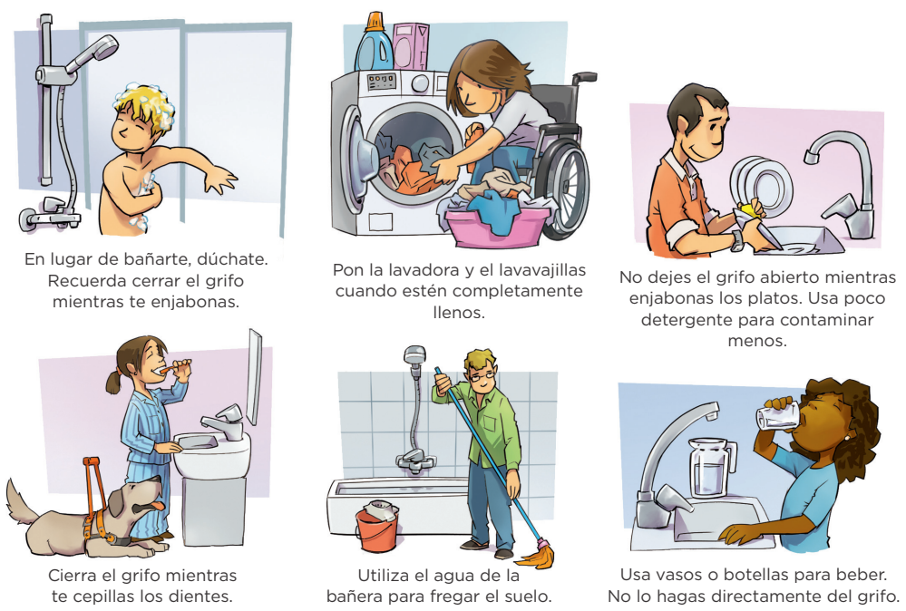
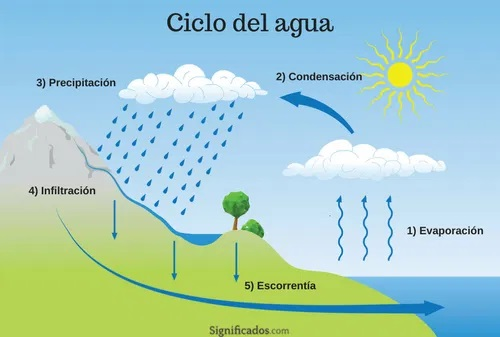
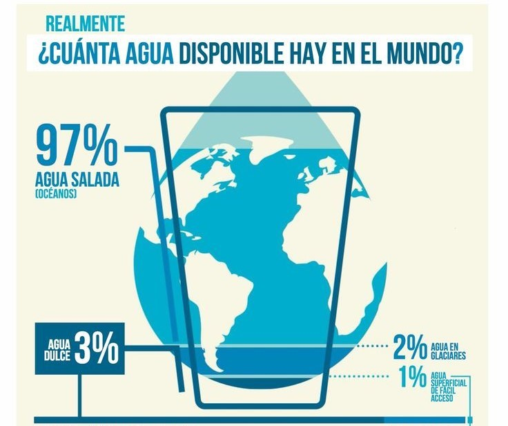

El agua es uno de los recursos naturales más esenciales para la vida en la Tierra. A lo largo de esta unidad, exploraremos su ciclo de vida y la manera en que impacta en todos los seres vivos. Comprender la importancia del agua, su distribución en el planeta tierra y cómo podemos protegerla es fundamental para tomar decisiones sobre su uso y conservación.
Objetivo general: Comprender el ciclo del agua, su importancia para la vida en la Tierra y su distribución, promoviendo la reflexión sobre su conservación y gestión responsable.
Objetivos específicos:
- Explicar las etapas del ciclo del agua y su impacto en el medio ambiente.
- Identificar la relación entre el agua y los procesos vitales en los seres vivos.
- Analizar la distribución del agua en el planeta.
- Promover la conciencia sobre la importancia de conservar y utilizar el agua de manera responsable.
Importancia del agua
El agua, un recurso natural indispensable para la existencia de la vida en nuestro planeta, desempeña un papel fundamental en diversos procesos y ciclos que sostienen los ecosistemas terrestres y acuáticos (Fernández Cirelli, 2012). Sin ella, la existencia de vida tal como la conocemos sería imposible.
En primer lugar, el agua es crucial para el funcionamiento de los organismos vivos. En los seres humanos, el agua es indispensable para procesos vitales como la digestión, la regulación de la temperatura corporal y la eliminación de desechos (Organización Panamericana de la Salud et al., 1988). Además de que es un elemento vital para gran cantidad de tareas desarrolladas a diario como la producción de alimentos, la higiene personal, la industria y el abastecimiento de agua potable. Además, el agua juega un papel esencial en la regulación del clima y el mantenimiento de los hábitats naturales. Los ecosistemas acuáticos, como ríos, lagos y océanos, dependen del agua para sustentar una biodiversidad rica y equilibrada. Para las plantas, el agua es indispensable en la fotosíntesis, el proceso mediante el cual producen su alimento y liberan oxígeno, un elemento vital para todos los seres vivos. Sin agua, el crecimiento, desarrollo y la producción de oxígeno por parte de las plantas serían imposibles, lo que afectaría gravemente el equilibrio ecológico y la vida en la Tierra. En conclusión, el agua es un recurso vital e interconectado con todos los aspectos de la vida en el planeta, lo que hace imprescindible su conservación y manejo responsable para las generaciones futuras.

El ciclo del agua
El ciclo del agua, también conocido como ciclo hidrológico, es el proceso continuo de circulación del agua entre la atmósfera, la superficie terrestre y los océanos (Bonan et al., 2021). En la Tierra, el agua se manifiesta en tres estados: sólido (hielo), líquido y gaseoso (vapor de agua), cambiando de forma de manera constante y asegurando el equilibrio de los ecosistemas.
En (Savé et al., 2005) se describe el ciclo del agua y sus etapas clave:
- Evaporación: Proceso mediante el cual el agua superficial se transforma de estado líquido a gaseoso (vapor de agua), incorporándose a la atmósfera. Este fenómeno resulta particularmente intenso en zonas de altas temperaturas, como ocurre en las regiones oceánicas cercanas al ecuador.
- Condensación: Transformación del vapor de agua de estado gaseoso a líquido. Ocurre cuando masas de aire cálido ascienden, se enfrían y reducen su capacidad de retención de humedad, provocando que el exceso de vapor se condense y forme nubes.
- Precipitación: Proceso por el cual el agua condensada en las nubes retorna a la superficie terrestre. Puede manifestarse en diversas formas: lluvia (la más común), nieve, granizo o aguanieve, dependiendo de las condiciones atmosféricas.
- Infiltración: Una vez que el agua precipita, parte de ella penetra en el subsuelo a través de los poros del terreno, alimentando los acuíferos, mientras que otra porción fluye superficialmente hacia ríos, lagos y eventualmente los océanos.
- Escorrentía: El agua infiltrada que alcanza zonas de saturación forma reservorios subterráneos (acuíferos), llenando los espacios porosos y fracturas de las formaciones rocosas. Estos constituyen importantes depósitos de agua dulce.
El ciclo del agua es fundamental para la vida en la Tierra, ya que regula el clima, mantiene los ecosistemas y garantiza la disponibilidad de agua para los seres vivos (Gleeson et al., 2020). Este proceso está influenciado por diversos factores, como la energía solar, la temperatura, los vientos y la geografía, los cuales determinan la forma en que el agua se evapora, se condensa y regresa a la superficie. Comprender en profundidad el ciclo del agua no solo permite analizar el impacto de los cambios ambientales y de las actividades humanas, sino que también es clave para gestionar de manera responsable este recurso esencial, promoviendo su uso sostenible y asegurando su disponibilidad para las futuras generaciones.

Distribución del agua en la Tierra
En (Blanco, 1996) se señala que del total de agua presente en el planeta, únicamente el una pequeña cantidad (3% del agua total) corresponde a agua dulce, mientras que la cantidad restante (97% del total del agua) es agua salada, localizada principalmente en mares y océanos. De la cantidad de agua dulce, más de la mitad de esta se encuentra en estado sólido, como nieve y hielo, principalmente en montañas y casquetes polares.

Es vital comprender que, aunque el agua cubre una gran parte de la superficie terrestre, solo una pequeña fracción de ella es accesible para consumo y actividades humanas. Esto hace que el agua sea un recurso limitado y valioso, el cual debe ser cuidado y preservado.
Protección del agua: acciones para su conservación y uso responsable
La contaminación del agua es uno de los desafíos ambientales más graves de la actualidad, esta se produce cuando sustancias nocivas, como productos químicos, residuos industriales, plásticos y desechos orgánicos, se introducen en ríos, lagos y océanos, alterando su equilibrio natural y poniendo en riesgo la salud de los ecosistemas y de las personas (Isch, 2011).
Las principales fuentes de contaminación del agua
- Residuos industriales y químicos: Muchas fábricas vierten sustancias tóxicas en los cuerpos de agua, lo que pone en riesgo la vida acuática y la salud humana.
- Aguas residuales y desechos domésticos: Los desechos sin tratar contienen bacterias, virus y productos químicos que pueden afectar la calidad del agua potable.
- Uso excesivo de fertilizantes y pesticidas: En la agricultura, estos productos pueden filtrarse al agua subterránea o ser arrastrados por la lluvia hacia ríos y lagos, provocando problemas como la eutrofización, que reduce el oxígeno disponible en el agua y afecta la vida acuática.
- Desechos plásticos: Millones de toneladas de plástico llegan a los océanos cada año, poniendo en peligro a numerosas especies y contaminando la cadena alimentaria.
Por lo tanto, es fundamental adoptar medidas como las indicadas a continuación, con el objetivo de conservar y proteger este recurso vital.
- Uso eficiente del agua: cerrar el grifo mientras se cepillan los dientes o se lavan las manos, reparar fugas y utilizar dispositivos de bajo consumo en el hogar.
- Reducción de la contaminación: Evitar verter aceites, productos químicos o medicamentos en desagües o cuerpos de agua.
- Protección de fuentes de agua: Plantar árboles cerca de fuentes de agua para prevenir la erosión y mantener su calidad.
- Educación y concienciación: Participar en campañas de limpieza de ríos y playas.
Proteger el agua no solo es una responsabilidad ambiental, sino también un acto de solidaridad hacia las futuras generaciones, quienes dependerán de este recurso para sobrevivir y prosperar. Cuidar el agua es, en definitiva, cuidar la vida misma.
Conclusiones
El agua es un recurso fundamental para la vida en la Tierra, desempeñando un papel clave en los procesos biológicos, climáticos y ecológicos. A lo largo de esta unidad, hemos analizado su importancia, el ciclo hidrológico y su distribución, permitiendo una comprensión más profunda de su impacto en nuestro planeta y en nuestra vida cotidiana.
El ciclo del agua es un proceso dinámico que garantiza la disponibilidad de este recurso, regulando el clima y sosteniendo los ecosistemas. Además, la distribución del agua en el planeta evidencia que solo una pequeña fracción es accesible para el consumo humano, lo que hace imprescindible su conservación. Por ello, es fundamental fomentar una cultura de cuidado y preservación del agua, promoviendo acciones concretas para su protección.
El agua es vida, y su preservación es una responsabilidad compartida. Solo a través de un esfuerzo conjunto podremos garantizar su disponibilidad para las generaciones futuras, asegurando así el equilibrio de nuestro planeta y el bienestar de todos los seres vivos.
Referencias:
Blanco, F. (1996). Fuentes de agua y Métodos de riego. INIA Serie Técnica, 76, 7.
Bonan, L., Bonanata, J., González, M. L., Pittaro, A., Chadwick, G., & Azpiazu, S. (2021). La significatividad del ciclo del agua: Un camino para explorar modos de construir una educación científica intercultural. Tecné, Episteme y Didaxis: TED, 50, 15-33.
Fernández Cirelli, A. (2012). El agua: Un recurso esencial. Química Viva. https://www.redalyc.org/articulo.oa?id=86325090002
Gleeson, T., Wang‐Erlandsson, L., Porkka, M., Zipper, S., Jaramillo, F., Gerten, D., Fetzer, I., Cornell, S. E., Piemontese, L., Gordon, L. J., Rockström, J., Oki, T., Sivapalan, M., Wada, Y., Brauman, K., Flörke, M., Bierkens, M., Lehner, B., Keys, P., … Famiglietti, J. (2020). Illuminating water cycle modifications and Earth system resilience in the Anthropocene. Water Resources Research, 56. https://doi.org/10.1029/2019WR024957
Isch, E. (2011). La contaminación del agua como proceso de acumulación. Justicia hídrica: acumulación, conflicto y acción social, 97-109.
Organización Panamericana de la Salud, Organización Panamericana de la Salud, & McJunkin, F. E. (1988). Agua y salud humana. Serie PALTEX para ejecutores de programas;12. https://iris.paho.org/handle/10665.2/3099
Savé, R., de Herralde, F., & Biel, C. (2005). Aproximación al ciclo del agua en ecosistemas forestales. Invest Agrar: Sist Recur For, 14(3), 497-512.